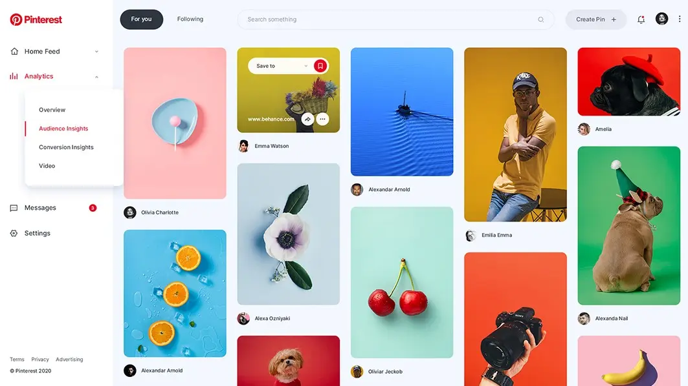
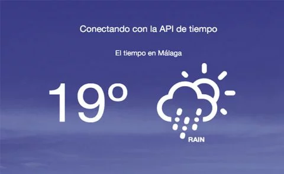

Me considero una persona autodidacta y mi interés principal es
aprender las nuevas tecnologías del Frontend y empezar en el Backend para
un futuro ser desarrollador full stack
Xeix
Página web de nuestro clan de Call Of Duty Mobile
Pinterest
Clon de Pinterest hecho con HTML y Tailwind CSS (en proceso)

App del tiempo
Api del tiempo (proximamente)

Spotify
Clon de Spotify hecha con Astro, Tailwind CSS y React